The following commands should be used to start CeNet Omnibus server.
library(CeNetOmnibus)
CeNetOmnibus()
Data Input provides the interface for users to upload data for the construction of ceRNA network.
1.1 Expression Profiles
The expression profiles of ceRNAs and microRNAs should be plain text delimited by tab, comma, space, semicolon or any other prac-ticable marks. Users can set seperators, quotes, with/without headers. To name the datasets, please confirm if the program should name dataset with/without the first column. The rows of uploaded files should represent ceRNAs/microRNAs, while the columns should represent samples.
| TCGA.3C.AAAU.01 | TCGA.3C.AALI.01 | TCGA.3C.AALJ.01 | TCGA.3C.AALK.01 | TCGA.4H.AAAK.01 | |
|---|---|---|---|---|---|
| ENSG00000275454 | 0.35 | 0.13 | 0.25 | 0.23 | 0.2 |
| ENSG00000261519 | 0.06 | 0.04 | 0.07 | 0.01 | 0.09 |
| ENSG00000267405 | 0.03 | 0.18 | 0.15 | 0.13 | 0 |
| ENSG00000115365 | 25.05 | 9.96 | 8.47 | 11.39 | 15.6 |
| ENSG00000274395 | 0.05 | 0 | 0.09 | 0.13 | 0.42 |
| ENSG00000177272 | 0.13 | 0.49 | 0.22 | 0.33 | 0.13 |
| ENSG00000235142 | 0.05 | 0.01 | 0.03 | 0.03 | 0 |
| mirbase21_ID | TCGA.BH.AB28.01 | TCGA.AO.A128.01 | TCGA.A1.A0SD.01 | TCGA.B6.A0I1.01 | TCGA.BH.A0BF.01 |
|---|---|---|---|---|---|
| MIMAT0002841 | 0.745546 | 0 | 0.253132 | 0 | 0 |
| MIMAT0002840 | 0.186387 | 0 | 0 | 0 | 0 |
| MIMAT0021122 | 0 | 0 | 0 | 0 | 0 |
| MIMAT0021123 | 0 | 0 | 0 | 0 | 0 |
| MIMAT0021120 | 0 | 0 | 0 | 0 | 0 |
| MIMAT0021121 | 0 | 0 | 0 | 0 | 0 |
NOTE: Please Remeber to Click Preview Button on the right-bottom corner of the panel once set parameters properly.
1.2 The Interaction between ceRNAs and microRNAs
The interactions file between ceRNAs and microRNAs should be 0-1 matrix to represent if there are interactions between ceRNAs and microRNAs. The file should be plain text delimited by tab, comma, space, semicolon or any other prac-ticable marks. Users can set seperators, quotes, with/without headers. To name the datasets, please confirm if the program should name dataset with/without the first column. The rows of uploaded files should represent ceRNAs, while the columns should represent microRNAs.
| MIMAT0000646 | MIMAT0002809 | MIMAT0000617 | MIMAT0000266 | MIMAT0000264 | |
|---|---|---|---|---|---|
| ENSG00000275454 | 1 | 1 | 0 | 1 | 0 |
| ENSG00000261519 | 1 | 0 | 0 | 1 | 1 |
| ENSG00000267405 | 0 | 1 | 0 | 1 | 1 |
| ENSG00000115365 | 1 | 1 | 1 | 1 | 1 |
| ENSG00000274395 | 1 | 0 | 1 | 0 | 1 |
| ENSG00000177272 | 1 | 1 | 1 | 1 | 1 |
| ENSG00000235142 | 1 | 1 | 1 | 1 | 1 |
NOTE: Please Remeber to Click Preview Button on the right-bottom corner of the panel once set parameters properly.
1.3 Essential ceRNA Information
The Enssential ceRNA Information will be used to group ceRNAs and set network/module visualization
The Essential ceRNA Information can be supplied by two ways:
-
Biomart Download
-
Custom Upload
For Biomart Download method, users can select Ensembl Archieve, Species, Gene ID Type, and search items in the Ensembl Database. Users are able to select a part of ceRNAs in the input datasets.
For Custom Upload method , the uploaded file should be plain text delimited by tab, comma, space, semicolon or any other prac-ticable marks. Users can set seperators, quotes, with/without headers. To name the datasets, please confirm if the program should name dataset with/without the first column. The rows of uploaded files should represent ceRNAs, while the columns should represent the information of ceRNAs. The first column of the uploaded file should be the ceRNA identifiers.
| ensembl_gene_id | description | strand | external_gene_name | gene_biotype | |
|---|---|---|---|---|---|
| ENSG00000006377 | ENSG00000006377 | distal-less homeobox 6 [Source:HGNC Symbol;Acc:HGNC:2919] | 1 | DLX6 | protein_coding |
| ENSG00000010361 | ENSG00000010361 | fuzzy planar cell polarity protein [Source:HGNC Symbol;Acc:HGNC:26219] | -1 | FUZ | protein_coding |
| ENSG00000010438 | ENSG00000010438 | serine protease 3 [Source:HGNC Symbol;Acc:HGNC:9486] | 1 | PRSS3 | protein_coding |
| ENSG00000036054 | ENSG00000036054 | TBC1 domain family member 23 [Source:HGNC Symbol;Acc:HGNC:25622] | 1 | TBC1D23 | protein_coding |
| ENSG00000047249 | ENSG00000047249 | ATPase H+ transporting V1 subunit H [Source:HGNC Symbol;Acc:HGNC:18303] | -1 | ATP6V1H | protein_coding |
| ENSG00000056998 | ENSG00000056998 | glycogenin 2 [Source:HGNC Symbol;Acc:HGNC:4700] | 1 | GYG2 | protein_coding. |
Data Processing provide the interface to Group CeRNAs, Filter Bad Samples, Filter Non-Expressed MicroRNAs/CeRNAs and Value Transformation.
When enter the Data Processing tab, the program will obtains the common ceRNAs, microRNAs and samples in the uploaded files.
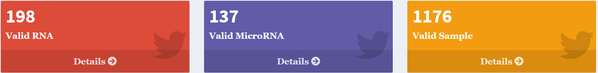2.1 Gene Grouping
Users are allowed to group ceRNAs into different groups to set different paramenters for the ceRNA filter and network construction. For example, the non-coding RNAs, especially long non-coding RNAs (lncRNAs) usually have relatively lower expression levels. The thresh of non-expressed lncRNAs may be lower than that of mRNAs.
Users can group ceRNAs according to the essential ceRNA information uploaded in step 1.3. Validated columns are listed.

NOTE: Click Preview Button on the right-bottom corner of the panel once set parameters properly.
NOTE: The ceRNAs of non-selected items will be removed in the next processing.

2.2 Sample Filter
There may be some bad samples in the ceRNA/microRNA expression profiles. This section allows users to remove these bad samples.
Firstly, users should set the thresh of a good microRNA/ceRNA in samples. For example, we think the CPM of a microRNA larger than 50 is good, while the RPKM of a ceRNA larger than 0.1 is good. Then, the program will calculate the good microRNAs/ceRNAs ratio each sample, and create the distribution plot. Finally, users need to decide how many samples should be remained by sliding the percentile bar.
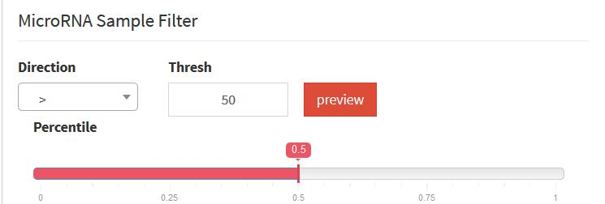 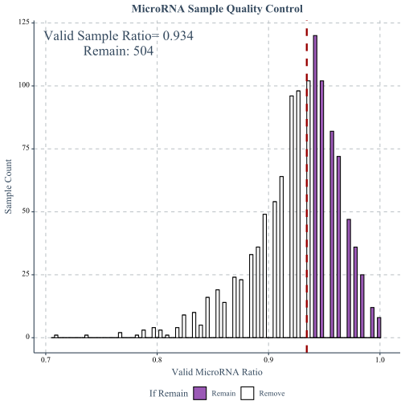
NOTE: Click Preview to create the plot, and the change of Percentile bar will update the plot.
NOTE: Please Remeber to Click Filter Button on the right-bottom corner of the panel once set parameters properly to execute the Sample Filter.
2.3 RNA Filter
Because the expressions of ceRNAs and microRNAs have tissue-specificity, non-expressed microRNAs and ceRNAs should not appear in the ceRNA networks. This section allow users to remove non-expressed microRNAs and ceRNAs.
Firstly, users should set the minimal expression thresh of a expressed microRNA or ceRNA . For example, we think the CPM of a microRNA larger than 100 is expressed, while the RPKM of a noncoding ceRNA larger than 0.5 is expressed and 1 for a coding ceRNA. Then, the program will calculate the expressed sample ratio of each RNA, and create the distribution plot. Finally, users need to decide how many samples a RNA should express in by sliding the Minimal Sample Ratio bar.
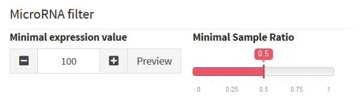

Tips: Click Preview to create the plot, and the change of Percentile bar will update the plot.
NOTE: Please Remeber to Click Filter Button on the right-bottom corner of the panel once set parameters properly to execute the RNA Filter.
2.4 Value Transformation
We may need to perform some transformation operations on the CeRNA and MicroRNA matrices. In this step, we operate CeRNA by default. You can also choose MicroRNA. Their operation method is the same.
In Transform Operations, you can choose to perform log conversion or standardization. Hovering the mouse over each button will introduce detailed processing operations. It should be noted that we only allow log conversion first, or you can ignore the log step and standardize directly. Remember to click the Action button after the operation. If you are not satisfied with the operation, you can click the Cancel button to restore the original data.
Note the Custom button. If you want to write a function to perform data conversion, you can click it. There will be detailed examples in the pop-up interface for you to write functions.
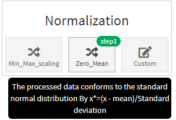Tips: Our operation will not be iterative. If you click the Action button again, it will perform the operation you selected on the initial data.
CeNet Omnibus provides a set measurements for users to identify ceRNA pairs and construct ceRNA networks. Current version integrated 5 measurements, including Pearson Correlation Coefficient, liquid association, microRNA significance, mutual information, conditional mutual information. CeNet Omnibus also allows users to defined new measurements.
Network Construction provide the interface to Choose Measurements, Set Parameters and Construct Network.
3.1 Choose Measurement
Click Add New Button to add a new measurement. Users need to set how many CPU cores ared needed to compute this measurement. Additionally, users can select if they want to compute the measurement of all pairs or a part of pairs according to the ceRNA groups defined in section 2.1.
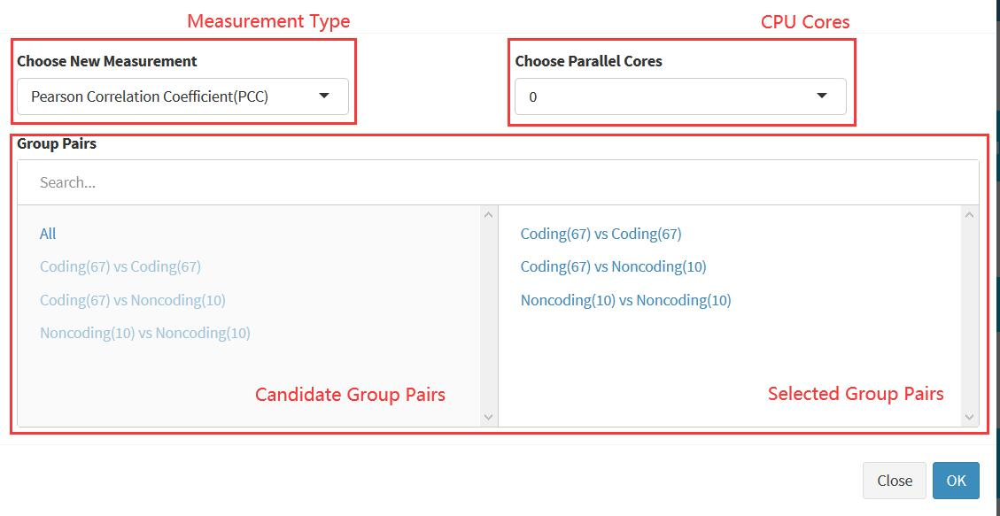 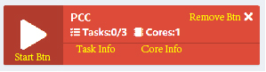Click Start Btn to start calculation. When the calculation is finished, the background color will be Green
TIPS: PCC only need one core to compute.
3.2 Set Threshold
When the calculation is finished, the program will create the distribution plot of every task.
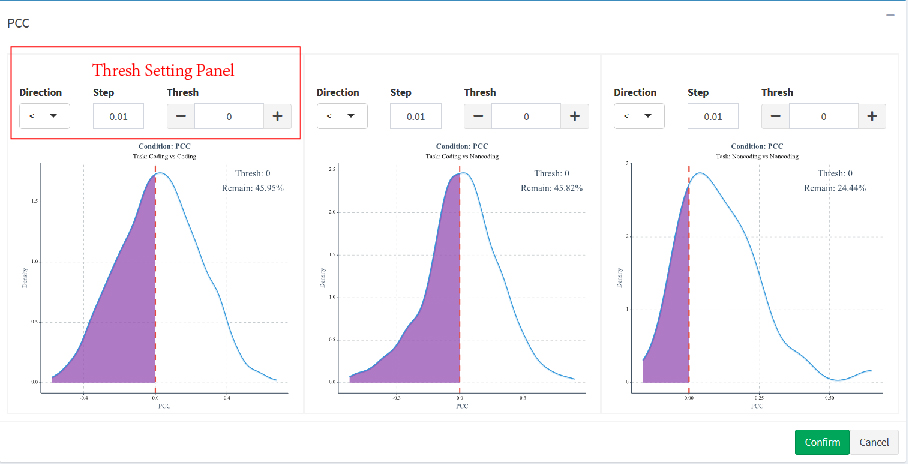Direction can set which part of pairs should be remained. + and - can be used to tune the thresh value with step in Step
After all settings, click Confirm button to save the threshes.
Tips: If you want all pairs to share the common thresh, please select All in section 3.1. While you want to set every group pair with different threshes, please select the group pairs seperately.
3.3 Network Construction
After saving all the threshes, Click Construct Network button to create the ceRNA network. The program will apply all the threshold setted in section 3.2. The program will summarize the network after the constrction.
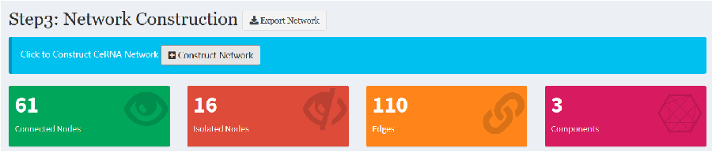4.1 Choose Layout
We provide seven layouts for you to choose. Including: Circle, Random, Grid, Concentric, Breadth First and Cose.
NOTE: The network needs to be constructed in the third step before selecting the layout.
4.2 Change Gene Name
You can choose to change the name tag of the network node. The optional entry is the gene information you provided in section 1.3.
4.3 Choose Node Color
First select the grouping information you are interested in. After the selection, the group names of the nodes under the grouping condition will appear. You can change the color of each group of nodes as will. By default, it changes the color of all nodes.
4.4 Choose Node Shape
Same as the previous step, you can change the shape of each node. We provide eight different shapes, such as Exlipse, Star.
4.5 Select node
First select the group that the node name belongs to, and then enter exactly the information of the node you need to search. If you can't find it, a prompt will pop up. If the search is successful, the node will enter the selected state. The label of the node will show another color. You can move the node by mouse.
Tips: Make sure the group you choose matches the one in Change Gene Name
4.6 Reset network
Clicking this button will restore the location of the network to prevent mouse misoperations from moving the network out of the window. Note that this button only restores the location of the network. The color, shape, etc. will not change.
4.7 Export Network
Export the visualized network in the fourth page as a image
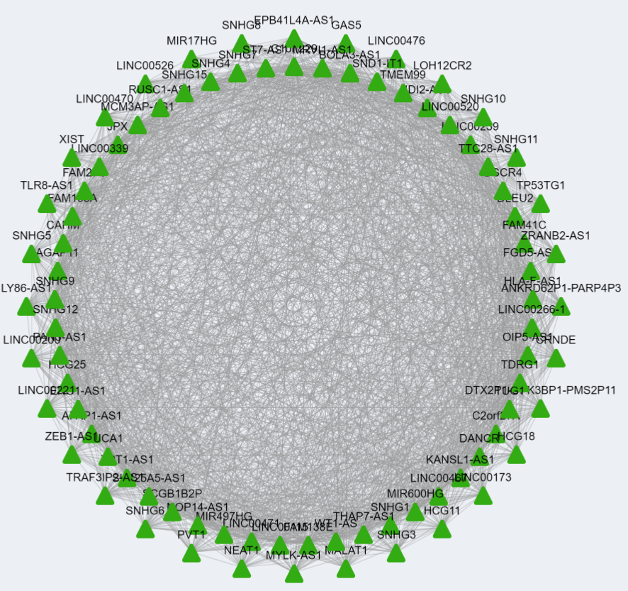CeNet Omnibus provide four types of analysis to ceRNA network, including Network Topological Property, Network Module, Enrichment Analysis and Survival Analysis.
5.1 Network Topological Property
CeNet Omnibus can calculate four node centralities and one edge centrality to evaluate the network topological properties. Users only need to click the corresponding buttons to create the density plot of every centrality.
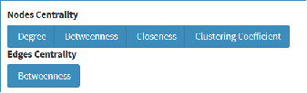 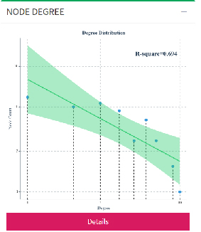Tips: Click Detail button to get detail information
5.2 Network Module
CeNet Omnibus integrated a set of network module detection algorithms to identify ceRNA modules, including Louvain Method, MCL, MCODE, etc.
CeNet Omnibus will summarize the communities in a table. Users can select modules to visualize and set node properties with the similar way in section 4.
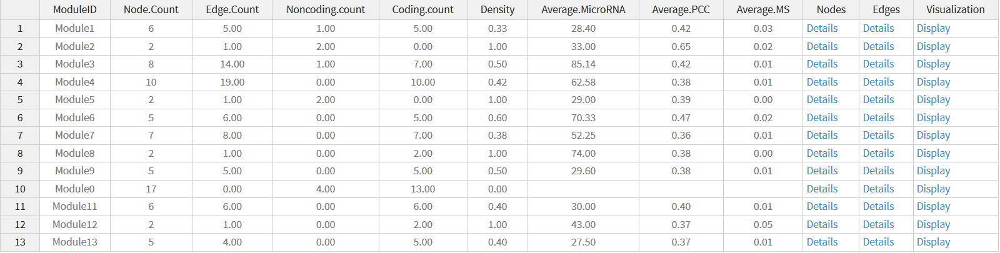 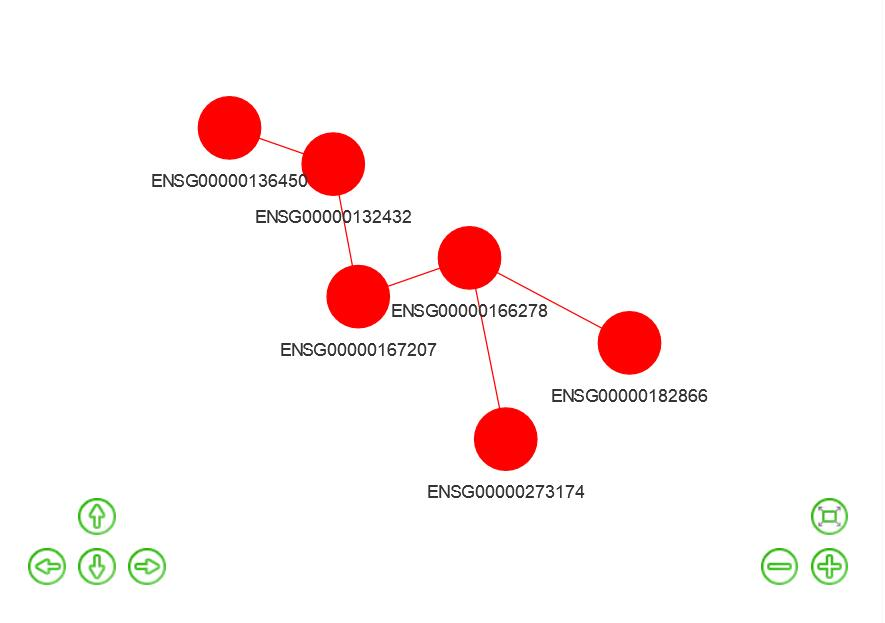 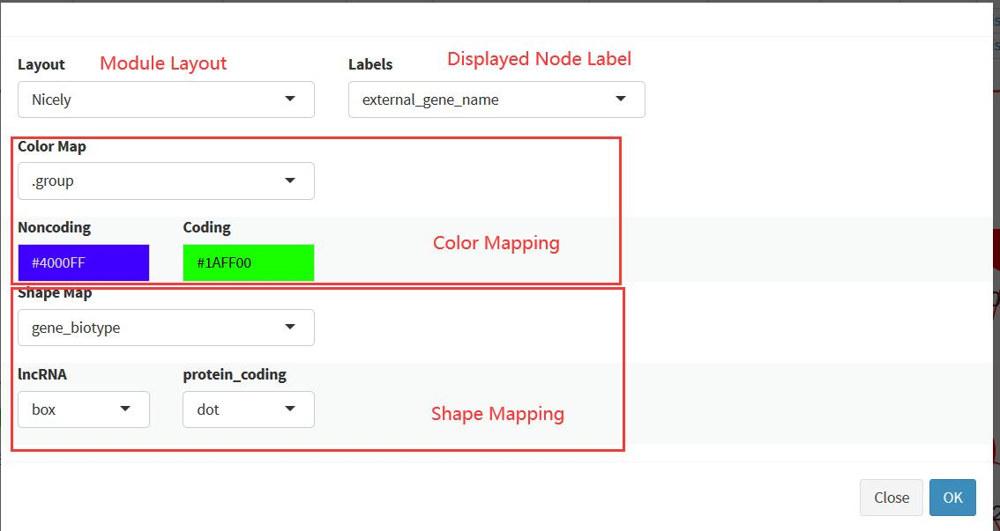 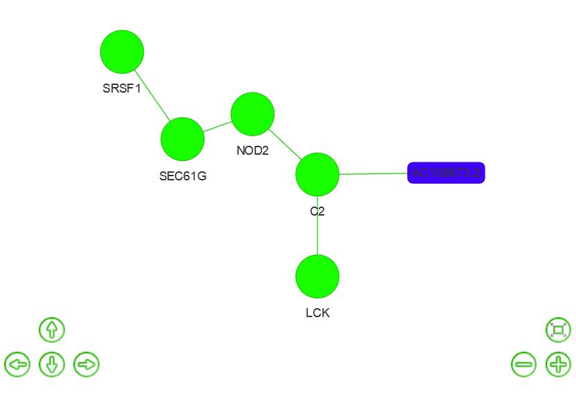5.3 Enrichment Analysis
Here we can perform enrichment analysis to these modules. Sure, you can also analyze other genes sets, by choosing Gene Set Source as Custom Gene and inputing data as required.
Currently, CeNet Omnibus integrates g:Profiler to do function enrichment analysis. Besides, CeNet Omnibus allows users to provide custom defined gene sets to other analysis. For user-defined data sets, users should choose custom input, and upload a gene sets file. In this file, every line represents a gene set, seperated with tab. And the first element in every line should be the name of the gene set. Users can click Preview to check the uploaded file. The results will be shown in the Custom Gene Preview panel. Users can click Details button to view genes in corresponding gene sets.
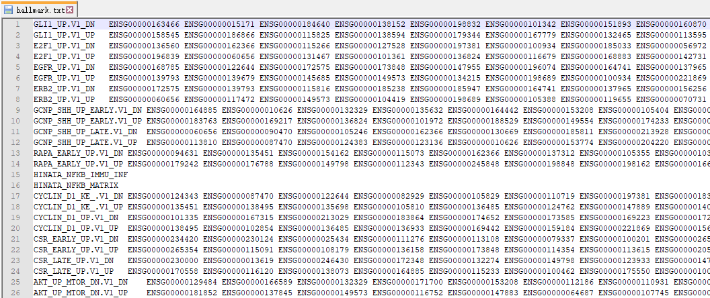The following is the parameter introduction:
- Organism: Select species for input data.
- Gene ID Map:Select Gene ID for input data.
- Significance threshold: Select enrichment calculation method.
- Data Sources:choose the data sources of interest（See R package: gprofiler2 for more details）
- User threshold:defines a custom p-value significance threshold for the results.
- Module analysis:Choose which modules to analyze.
- Plot Type:Select the type of picture to display.
You should confirm all parameter Meet your requirements. Finally click Perform Button. You will see pictures.


NOTE: You need to make sure that there are values at the top of the 2nd Step and Network Modules on 5th Step have been completed.Otherwise,Gene ID Map and Module analysis will be empty.
5.4 Survival Analysis
CeNet Omnibus provides the interface to perform survival analysis. There are two models, including Kaplan-Meier survival estimate model and Cox proportional hazards regression model.
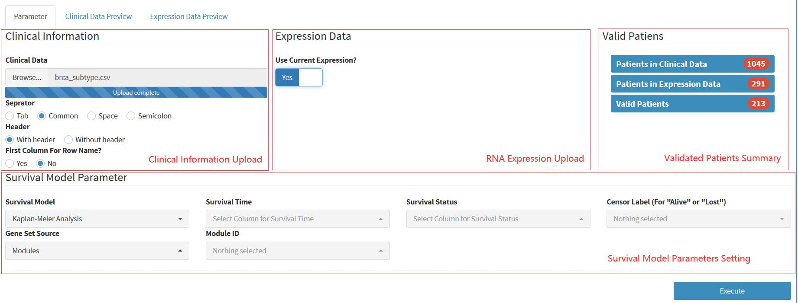Users need to upload the clinical information and corresponding expression profiles. Alternatively, the expression profiles can be the expreesion profiles used to construct ceRNA network. The program will obtain the patients that appear in both data sets. Therefore, please make sure the patient ids are in the same format in two data sets.
Users need to set parameters for the estimation models. CeNet Omnibus can analyze survival hazard of gene set or single gene.
 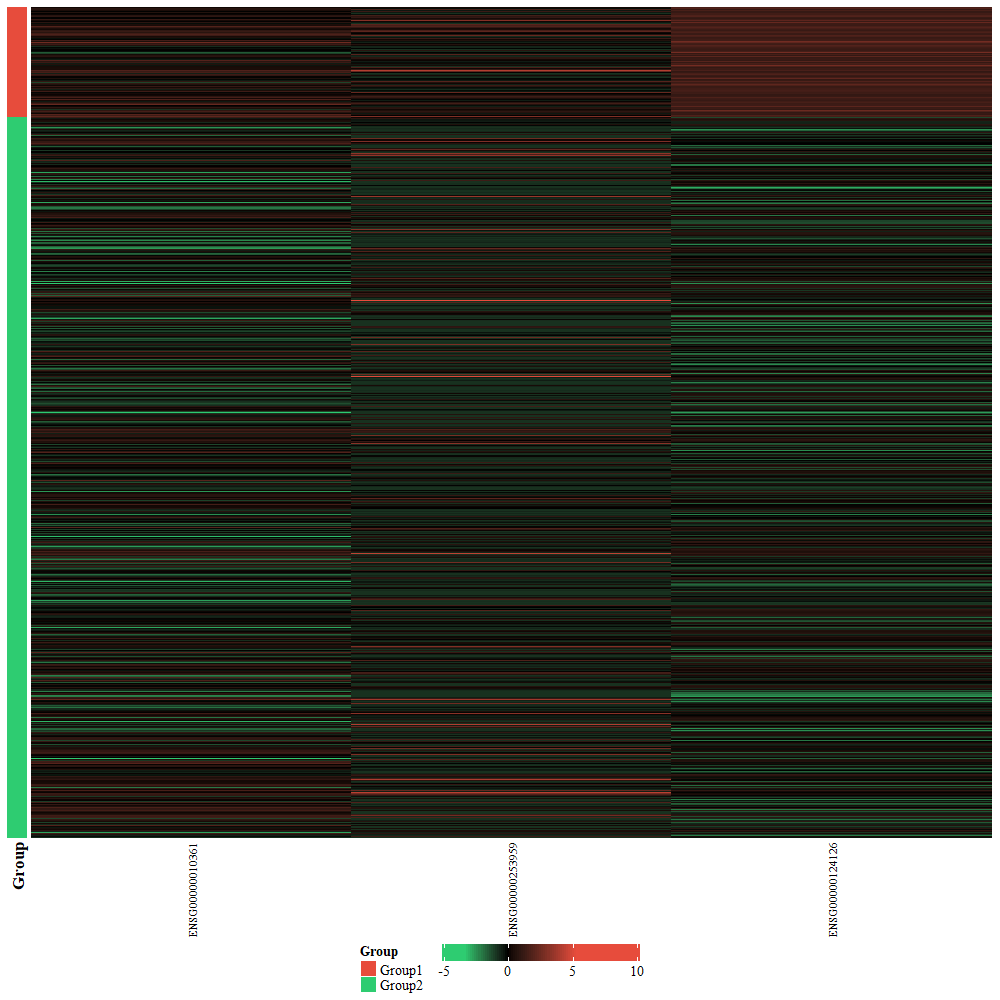
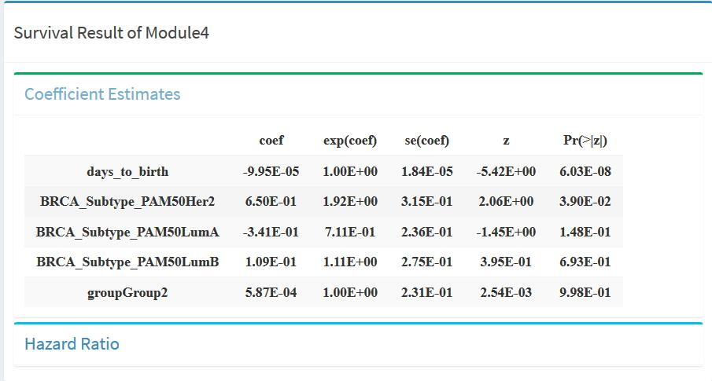
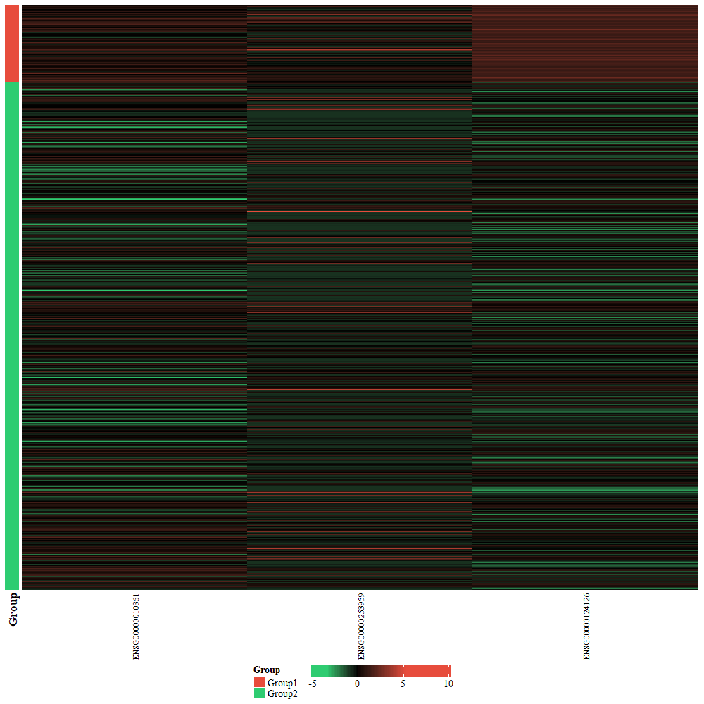
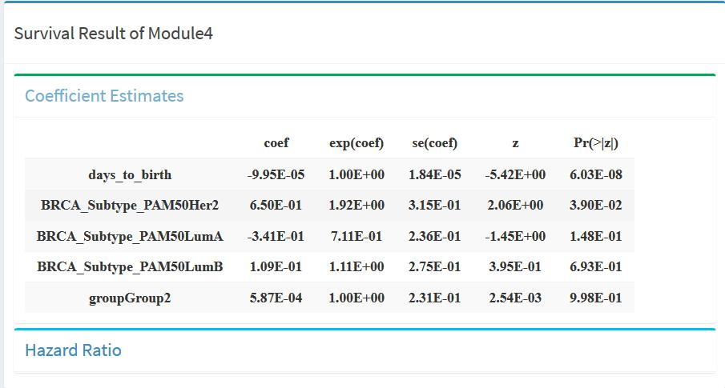